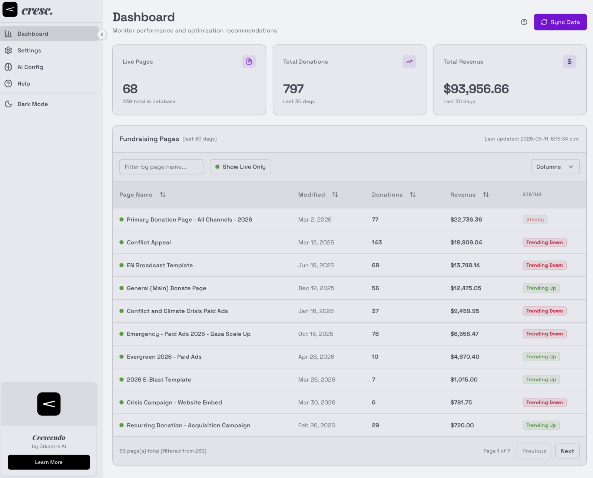
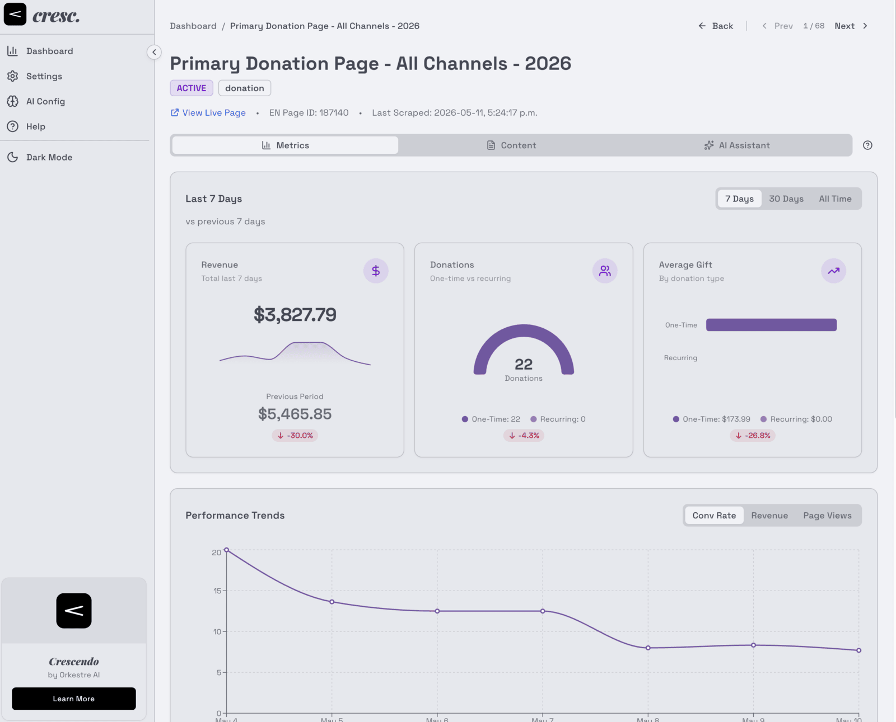
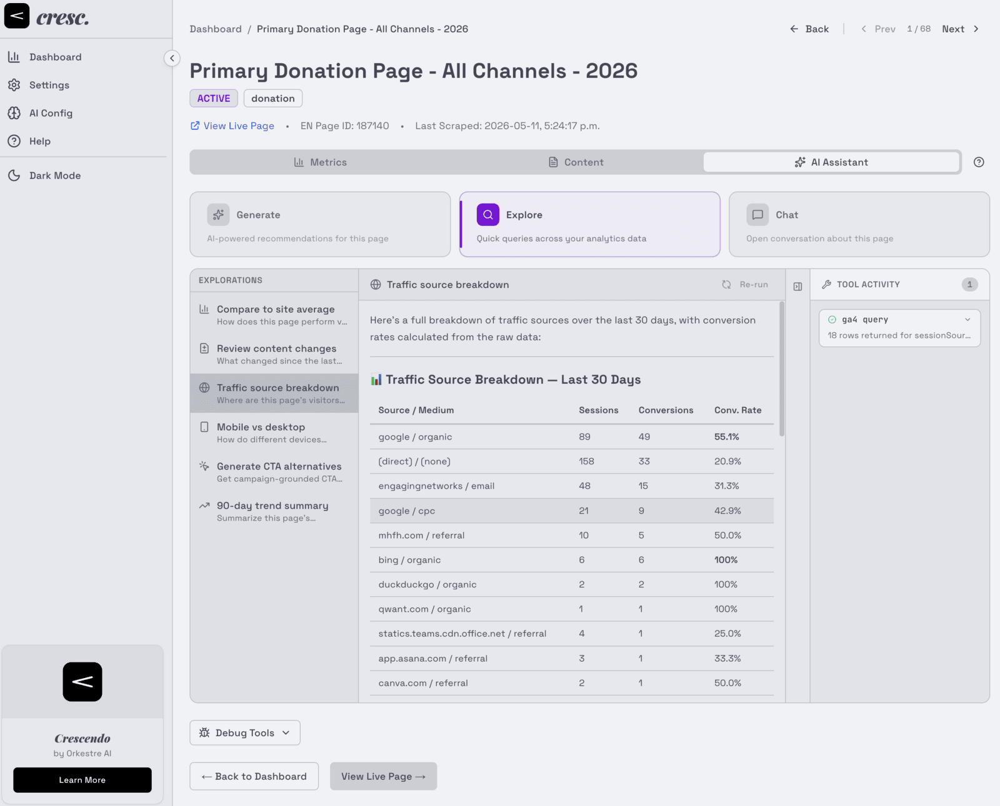

pp the quiet problems
If you run fundraising pages on Engaging Networks, you already know these.
They're quiet. They cost you anyway.
The revenue your analytics never saw
GA4 says one number. Engaging Networks says another. The gap is real donations your tracking missed — and nobody is measuring how big it is.
Your story is split across three tools
Conversion data in EN reports, traffic in GA4, the actual appeal on the page itself. Assembling one picture of one page is an afternoon. You have two hundred pages.
Nobody has time to audit every page
The pages that quietly underperform stay quiet, because reviewing each one by hand never makes it to the top of the list.
The tools that could help are priced for enterprises
Conversion optimization platforms assume enterprise budgets. Nonprofit digital teams rarely have one.
mp monitor
It watches your pages so you don't have to.
Crescendo connects to your Engaging Networks account and syncs every donation page. Then it layers in the numbers: traffic and conversions from Google Analytics 4, revenue from EN's NetDonor data. Every page, one dashboard — on the schedule you choose: on demand, hourly, daily, or weekly.

mf measure
It sees the page the way a donor does.
On deep scans, Crescendo scrapes each page's live content — appeal text, buttons, donation amounts — and captures desktop and mobile screenshots. It detects your payment gateway and digital wallets (Apple Pay, Google Pay, PayPal, Venmo), and flags console errors a donor would never report. Cloudflare-protected pages get a headless-browser fallback.
And it measures the gap: GA4 conversions against EN's donation records over the last 30 days, with an estimate of the revenue your tracking never saw.

f optimize
Then it asks the model you trust what to improve.
Recommendations are grounded in your actual page content and conversion data — not generic best practice. Three surfaces, one goal:
Per-page optimization suggestions, shaped by context profiles — an emergency appeal is not a mid-level campaign. Each arrives with a confidence score; dismiss it, or mark it implemented once you've made the change.
Curated queries you run against any page — traffic sources, mobile vs desktop, what changed since the last scan. Results are cached per page, with history, so you can compare runs over time.
A free-form assistant that can see the page's content, metrics, and fundraising history. Conversations persist per page, so the thread picks up where you left off.
Under the hood, the AI reaches your data through tools — GA4 queries, page performance, site-wide comparisons, snapshot diffs, content audits, and web search — and shows its work in a tool activity panel you can expand, call by call.
Every system prompt is editable — recommendations, explorations, and chat each expose theirs in AI Config. Write your own explorations in a full-page editor (reorder, toggle, delete them too), and set tool guardrails like a web-search domain allowlist.
Assigned per surface — recommendations, explorations, chat — and switched any time.

sotto voce security
Quiet by design.
Donor data deserves a tool that shows its work. Every claim below links to the code that makes it true.
-
Read-only by construction.
Crescendo never calls a write endpoint on your Engaging Networks account — it syncs and reads, nothing else.
src/lib/engaging-networks.ts · src/lib/en-public-client.ts -
Keys encrypted at rest.
API credentials are stored with AES-256-GCM, a random IV per secret, and masked in the UI.
src/lib/crypto.ts -
Delete on your terms.
One call clears pages, recommendations, or settings — with explicit confirmation — and retention cleanup prunes old data automatically.
src/app/api/settings/clear/route.ts · src/lib/cleanup.ts -
Self-hosted.
Docker Compose on your infrastructure. Your donor analytics never live on someone else's platform.
docker-compose.yml -
AI on your hardware, if you want.
Point it at Ollama and analysis runs on your own machines — no donor data sent to a cloud model.
src/lib/ai/providers.ts -
Open source, AGPL-3.0.
Read every line before you trust it with a single record.
LICENSE
ff open source
Turn it up.
Free and open source. Running in your infrastructure in two commands.
git clone https://github.com/orkestre-ai/crescendo.git
cd crescendo && docker compose upAGPL-3.0 · free forever · your data stays yours
Built by a 20-year nonprofit-sector veteran at Orkestre AI.